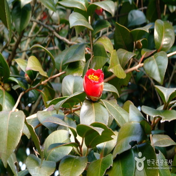
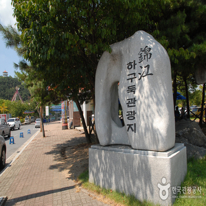
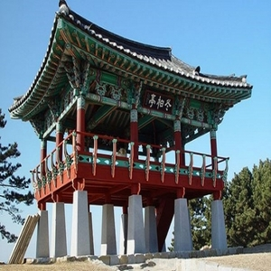

Sunrise and camellia flowers,
‘Red Trip’ in Seocheon
-

1
Maryangni Camellia Forest
The Camellia Forest in Marang-ri, Seomyeon, one of the eight scenic spots in Seocheon, is designated as Natural Monument No. 169. Here, 85 camellia trees over 500 years old form a dense forest covering 8,265㎡.
-

2
Geumgang Estuary Bank Tourist Complex
The Geumgang Estuary Bank Tourist Site, located in Seonjeong-ri, Maseo-myeon, Seocheon-gun, Chungcheongnam-do, is a famous place where you can see migratory birds that visit the Geumgang Estuary Bank every year.
-

3
Dongbaekjeong
The famous spot of the Camellia Forest is Dongbaekjeong, a multi-story pavilion built in a place with a good view of the hilltop of the forest. If you climb up Dongbaekjeong, you can enjoy the beautiful scenery of the West Sea, like the East Sea.